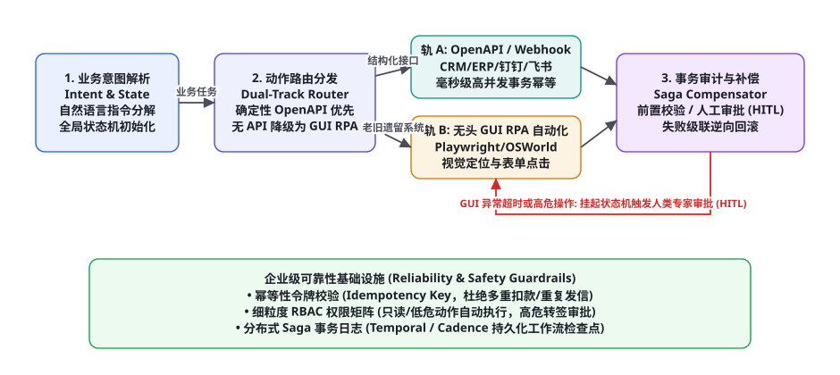
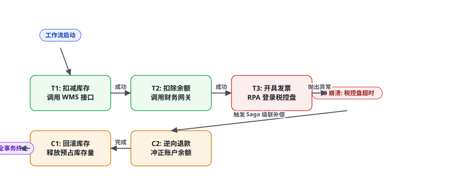

项目 5：企业级工作流自动化 Agent（Workflow & RPA）
在真实的跨国集团与大型企业组织中，核心业务流程极少局限在单一孤立系统中。一笔简单的跨国采购审批，往往需要串联现代 SaaS（如 Salesforce、Workday 的 RESTful API）、协同办公套件（飞书、钉钉、Slack Webhook）以及部署在内网无头服务器上的老旧遗留 Windows 桌面 ERP 软件。如果让大模型自由调用工具，极易发生接口超时重放导致重复扣款、半途网络崩溃导致数据不一致等灾难事故。本章我们将完整手搓一个支持「API + GUI RPA 双轨融合、分布式 Saga 事务补偿、人机协同（HITL）与毫秒级幂等防护」的企业级工作流自动化智能体。
全景架构：API 与 GUI RPA 双轨融合协同

很多开发者误以为工作流智能体就是简单的「ReAct 循环连续调用几个 Python 函数」。在严肃的企业生产环境中，这种玩具级脚本上线即遭遇惨败：外网 Webhook 偶发性丢包导致流程卡死、大模型误把「退款 100 元」重复执行了三次、或者在修改了第三张表时第四张表报错导致数据库处于脏数据状态。一个工业级工作流自动化 Agent 必须在以下四大核心阶段构筑坚不可摧的确定性防线：
第一阶段：业务意图解析与状态机编排（Intent Parsing & State Machine）。智能体将非结构化的人类业务指示（例如「将本月华东区签约的所有未开票合同同步至金蝶财务系统，并向对应销售发送汇总确认邮件」）解析为严格的有向无环图（DAG）或层级有限状态机。系统在内存与持久化数据库中为每一个任务实例生成唯一的全局追踪 ID（Trace ID）。
第二阶段：双轨智能路由引擎（Dual-Track Smart Router）。系统建立统一的能力资产目录（Capabilities Catalog）。对于支持 OpenAPI 3.0 / gRPC 的现代系统，优先采用强类型、高并发的 API 直连调用；对于没有开放接口的老旧银行客户端或内网 Win32 报税软件，自适应平滑降级至基于视觉的无头 GUI RPA 自动化（Playwright / OSWorld 协议，第 68 章与第 75 章）。
第三阶段：细粒度权限管控与人机协同审批（RBAC & Human-in-the-Loop）。并非所有操作都可以让智能体自主放行。根据第 60 章权限分级原则，系统将操作划分为只读操作（L0）、低危写入（L1）与高危资金流转（L2）。一旦检测到涉及批量转账、删除数据或对外正式发信，状态机自动挂起（Suspended），向飞书/企业微信推送富文本审批卡片，必须经由人类业务主管生物识别签名确认后方可解锁继续。
第四阶段：分布式 Saga 事务日志与逆向补偿（Saga Transaction & Compensation）。由于跨系统的异构 API 无法使用传统数据库的强两阶段提交（2PC），系统采用经典的 Saga 分布式事务模式。智能体在执行每一步正向动作前，必须在日志中登记其对应的反向逆向补偿动作（Compensating Action）；若后续环节发生不可逆崩溃，引擎自动沿相反方向依次调用补偿操作，实现数据最终一致性。
双轨路由实战：API 确定性与 RPA 鲁棒性平衡
在企业信息化历史沉淀中，纯粹的 API 自动化或纯粹的屏幕视觉 RPA 都是片面的。纯 API 无法攻克老旧遗留单机系统，而纯 GUI 视觉操作则极易受到 UI 分辨率抖动、字体缩放和弹窗干扰，且速度慢、资源消耗大。本架构设计了「API 优先、RPA 保底」的双轨自适应调度矩阵：
| 执行轨道 | 技术协议与驱动器 | 适用业务场景 | 吞吐与延迟 | 异常捕获与容错 |
|---|---|---|---|---|
| 轨 A: OpenAPI 确定性直连 | RESTful, gRPC, Webhook, 数据库驱动 | ERP、CRM、工单系统、支付网关、邮件通知 | 高并发 (1000+ QPS)，毫秒级 (50~200ms) | HTTP 状态码判断，超时自动重试（带退避） |
| 轨 B: 视觉/DOM GUI RPA | Playwright, Selenium, PyAutoGUI, VDI 流 | 老旧税务客户端、内网管理控制台、Flash 报表 | 串行执行，秒级 (1.5s~5s / 步骤) | 页面截图 OCR 视觉比对，动态定位失败自愈 |
分布式 Saga 事务：让 Agent 具备后悔药能力

在分布式微服务与跨系统协同领域，最可怕的是「部分失败（Partial Failure）」。设想一个智能体自动采购流水线：库存扣除了、公司银行卡扣费了，但最后一步开具发票时税控盘机器崩溃。如果不引入事务补偿机制，企业账目将发生严重不平，甚至引发法律财务纠纷。
Saga 模式将长事务拆解为一系列包含正向操作 $T_i$ 与补偿操作 $C_i$ 的原子事务对：
$$\text{Transaction Pipeline} = [(T_1, C_1), (T_2, C_2), ..., (T_n, C_n)]$$
如果所有正向操作 $T_1, T_2, ..., T_n$ 全部返回成功，事务顺利提交通知用户；一旦任何中间步骤 $T_k$（$k \le n$）在多次重试后仍然抛出致命异常，Saga 协调器立即阻断后续动作，并沿着相反方向严格执行补偿序列：
$$\text{Compensation Sequence} = C_{k-1} \to C_{k-2} \to ... \to C_1$$
补偿操作的终极要求是具备绝对的幂等性（Idempotency）：即使由于网络重传导致补偿操作 $C_2$ 被重复调用了两次，系统的最终账户余额必须保持恒定，绝不能发生多退款或误扣款。
很多开发者寄希望于给大模型输入「刚才第3步失败了，请你想办法把前面的影响清理干净」。这种依靠大模型自发「反思补救」的做法在生产中是极其不负责任的。大语言模型本质上是概率模型，在面对复杂的系统报错堆栈时，很容易产生归因偏差、遗漏某个隐蔽数据库写入、或者再次捏造出不存在的补偿 API。Saga 模式通过在代码框架层面死锁事务日志与补偿拓扑，正向动作成功时由引擎自动在 SQLite / Redis 中持久化写入补偿函数的指针与参数快照。发生崩溃时由确定性的状态机引擎执行补偿调度，大模型只负责决策「是否放弃重试」，彻底排除了人为与概率性幻觉带来的资金风险。
完整端到端工程实现代码
以下给出该企业级工作流自动化 Agent 的核心调度框架实现，涵盖意图解析、Saga 事务链装配、API/RPA 模拟执行与逆向补偿保障：
import time, uuid, json
from typing import Callable, List, Dict, Any
class SagaStep:
def __init__(self, name: str, action: Callable, compensator: Callable, requires_hitl: bool = False):
self.name = name
self.action = action # 正向业务函数 T_i
self.compensator = compensator # 逆向补偿函数 C_i
self.requires_hitl = requires_hitl # 是否必须人工确认 (Human-in-the-Loop)
class EnterpriseWorkflowEngine:
def __init__(self, audit_logger=None):
self.logger = audit_logger or print
self.execution_ledger = [] # 持久化事务账本
def execute_workflow(self, workflow_id: str, steps: List[SagaStep], context: Dict[str, Any]) -> bool:
executed_steps = []
self.logger(f"=== 启动分布式工作流 [{workflow_id}] ===")
for idx, step in enumerate(steps):
step_name = step.name
self.logger(f"[Step {idx+1}] 准备执行: {step_name} ...")
# 1. 检查人机协同拦截门禁 (HITL)
if step.requires_hitl:
self.logger(f"⚠️ [HITL 阻断] 步骤 {step_name} 触碰高危权限，流程挂起，等待业务主管审批...")
approved = self._request_human_approval(workflow_id, step_name, context)
if not approved:
self.logger(f"❌ [审批拒绝] 主管驳回了步骤 {step_name}，工作流终止并触发补偿！")
self._trigger_compensation(executed_steps, context)
return False
self.logger(f"✅ [审批通过] 主管已批准，恢复执行。")
# 2. 正向执行与故障捕获
try:
# 记录审计前置检查点
checkpoint = {
"step": step_name,
"status": "RUNNING",
"timestamp": time.time(),
"context_snapshot": json.dumps(context)
}
self.execution_ledger.append(checkpoint)
# 真正调用业务逻辑 (API 或 GUI RPA)
step.action(context)
checkpoint["status"] = "SUCCESS"
executed_steps.append(step)
self.logger(f"[Step {idx+1}] 执行成功: {step_name}")
except Exception as e:
err_msg = str(e)
self.logger(f"🚨 [执行崩溃] 步骤 {step_name} 异常抛出: {err_msg}！立即启动 Saga 逆向补偿链路！")
self._trigger_compensation(executed_steps, context)
return False
self.logger(f"🎉 工作流 [{workflow_id}] 全链路圆满成功提交！")
return True
def _trigger_compensation(self, executed_steps: List[SagaStep], context: Dict[str, Any]):
"""逆序执行补偿序列，恢复系统一致性"""
self.logger("------------------ 启动逆向补偿回滚 ------------------")
for step in reversed(executed_steps):
try:
self.logger(f"[补偿中] 正在逆向回滚: {step.name} ...")
step.compensator(context)
self.logger(f"[补偿成功] {step.name} 状态已安全冲正。")
except Exception as comp_err:
# 补偿阶段若发生故障，属于严重事故，必须上报 P0 级人工介入告警
self.logger(f"🔥 [致命补偿失败] {step.name} 补偿抛错: {comp_err}！立即锁定系统触发呼叫中心报警！")
def _request_human_approval(self, w_id: str, step_name: str, context: dict) -> bool:
"""模拟向即时通讯群组 (钉钉/飞书) 推送审批卡片并等待回调"""
# 实际生产中此处为轮询或异步 Webhook 回调挂起
return True # 模拟人类点击了“同意”
# ================= 实际业务用例装配演示 =================
if __name__ == "__main__":
# 业务数据上下文
order_ctx = {
"order_id": "ORD_2026_0906",
"sku": "A100_SERVER_NODE",
"amount": 28000.0,
"customer": "全球智算科技",
"inventory_reserved": False,
"funds_deducted": False
}
# 定义动作与补偿对
def reserve_inventory(ctx):
print(f" [API] 成功预占仓库库存: {ctx['sku']} 1台")
ctx["inventory_reserved"] = True
def rollback_inventory(ctx):
if ctx.get("inventory_reserved"):
print(f" [Compensate] 释放库存预占: {ctx['sku']}")
ctx["inventory_reserved"] = False
def charge_account(ctx):
print(f" [API] 财务系统扣除企业对公账户余额: ￥{ctx['amount']}")
ctx["funds_deducted"] = True
def refund_account(ctx):
if ctx.get("funds_deducted"):
print(f" [Compensate] 发起银行电汇原路退款: ￥{ctx['amount']}")
ctx["funds_deducted"] = False
def rpa_issue_tax_invoice(ctx):
print(" [RPA] 启动 Playwright 登录航天信息税控盘系统...")
raise TimeoutError("税控盘硬件证书 USB-Key 离线超时未响应！")
def cancel_tax_invoice(ctx):
print(" [Compensate] 发票尚未开具成功，无需冲红作废。")
# 装配标准 Saga 步骤
pipeline = [
SagaStep("1. 仓库库存预占", reserve_inventory, rollback_inventory),
SagaStep("2. 对公账户扣款", charge_account, refund_account, requires_hitl=True),
SagaStep("3. 税控盘自动开票", rpa_issue_tax_invoice, cancel_tax_invoice)
]
engine = EnterpriseWorkflowEngine()
engine.execute_workflow("WF_PURCHASE_001", pipeline, order_ctx)幂等性令牌设计：杜绝跨网络重复执行
在企业自动化流水线中，网络抖动是常态。当 Agent 向三方支付网关发送 POST /v1/payments 时，如果在第 4.9 秒发生 TCP 握手超时，智能体无法判断扣款请求究竟是「压根没到网关」还是「已经扣款成功但回包丢失」。若盲目重试，将导致致命的双重扣款事故。
生产级 Agent 必须在每个写操作中严格推行「幂等性令牌机制（Idempotency Key / Mutex Lease）」：
第一步（令牌派发）：在调度任何外部写操作前，Agent 依据业务主键生成一个确定性的雪花哈希令牌：
$$\text{IdempotencyKey} = \text{SHA256}(\text{WorkflowID} + \text{StepIndex} + \text{BizTimestamp})$$
第二步（分布式互斥争抢）：在 Redis 或分布式数据库中执行原子化加锁：SET lock:idempotency:{key} {agent_id} NX EX 60。如果加锁失败，表明同一步骤正在被其他并发 Worker 推进，当前线程必须主动退让等待。
第三步（下游协议注入）：在发起 HTTP 请求时，强制将令牌附带在请求头中：X-Idempotency-Key: {IdempotencyKey}。合规的企业级 ERP / 银行网关在识别到该请求头后，若发现此令牌在过去 24 小时内已被成功消费，将直接返回上一次缓存的执行结果，而绝不重新扣除资金，彻底筑牢资金级安全堤坝。
GUI RPA 抗脆弱工程：应对 DOM 变动与视觉偏移
依赖网页 DOM 选择器（如 div > button.submit-btn-v2）的传统 RPA 脚本极其脆弱：前端工程师只要稍稍修改一下 CSS 类名，整个自动化流程就会全线瘫痪。高阶 RPA Agent 必须具备「多模态自愈定位三保险」：
| 定位层级 | 核心算法机制 | 容错度 | 失效时的自动降级路径 |
|---|---|---|---|
| L1: 语义无障碍树 (Accessibility Tree) | 匹配 role="button", name="确认开票" | 不受 CSS 改名影响，速度极快 | 降级至 L2 计算机视觉多模态定位 |
| L2: VLM 屏幕视觉锚点定位 | 向多模态模型输入截图，预测按钮中心归一化坐标 | 完全无视底层 DOM，仅靠肉眼识别 | 降级至 L3 交互式向人工求助标注 |
| L3: 人机协同标注回流 (HITL Fallback) | 向运维专家发送截图标红告警，由人工点击一次 | 100% 兜底保证业务不中断 | 系统记录人工点击相对坐标，增量训练本地小模型 |
生产落地交付检查清单与合规红线
将工作流自动化 Agent 部署至企业 ERP、银行对公核心业务时，必须对照以下交付清单执行严格的生产准入审查：
| 审查维度 | 生产合规红线 | 监控巡检指标 | 应急预案 |
|---|---|---|---|
| 资金与删除操作管控 | 金额超过 5,000 元或涉及 DELETE 动作，100% 经过 HITL 人工签署 | 审批卡片推送触达率 > 99.9% | 未收到人工响应前流程永久挂起，严禁超时自动放行 |
| 事务补偿覆盖率 | 每一个涉及状态变更的步骤必须登记单元测试验证过的反向 Compensator | CI/CD 静态扫描无补偿步骤报警 | 阻断未配置补偿函数的流程上线 |
| 审计追踪完整性 | 全流程必须记录完整的用户工号、模型 Token、输入参数快照与操作前后对比截图 | 日志存储遵从 SOC2 / ISO27001 标准保留 180 天 | 配置冷存储不可篡改 WORM 策略 |
| 最大重试与熔断阈值 | 单个 API 重试上限 3 次（必须搭配指数退避 Jitter），RPA 超时上限 30 秒 | 告警监控 PagerDuty 实时上报 | 触发全局断路器，流程暂停并转人工接管 |
深入实操：基于 Redis 分布式锁与令牌桶的高性能幂等引擎
在超高并发的企业级支付与库存扣减流水线中，仅仅靠应用层生成一个随机字符串远远无法满足苛刻的幂等性要求。当两个并发工作流 Worker 同时接收到对同一笔订单的扣款指令时，若加锁逻辑存在哪怕 1 毫秒的竞态条件时间窗口（Race Condition），系统就会发生灾难性的并发重复扣款。
生产级架构必须采用「基于 Redis Lua 脚本的原子化幂等互斥锁（Atomic Idempotency Mutex Lock）」。以下代码展示了工业级分布式幂等管理器的严密实现：
import hashlib, json, time
from typing import Optional, Dict, Any
class DistributedIdempotencyManager:
def __init__(self, redis_client):
self.redis = redis_client
# 原子化获取锁与检查历史结果的 Lua 脚本
self.acquire_lua = """
local key = KEYS[1]
local token = ARGV[1]
local ttl = tonumber(ARGV[2])
local current = redis.call('GET', key)
if current then
return current -- 返回已存在的状态或计算结果
else
redis.call('SET', key, token, 'EX', ttl)
return 'ACQUIRED'
end
"""
def generate_token(self, tenant_id: str, action_type: str, business_id: str, params: Dict[str, Any]) -> str:
"""生成确定性的业务唯一性幂等指纹 (SHA-256)"""
raw_payload = f"{tenant_id}:{action_type}:{business_id}:{json.dumps(params, sort_keys=True)}"
return "idem_" + hashlib.sha256(raw_payload.encode('utf-8')).hexdigest()
def execute_idempotent_action(self, token: str, action_func, ttl_seconds: int = 86400) -> Dict[str, Any]:
"""受分布式原子幂等保护的业务执行包装器"""
lock_key = f"lock:idempotency:{token}"
# 1. 执行原子判定
res = self.redis.eval(self.acquire_lua, 1, lock_key, "PROCESSING", ttl_seconds)
if res != b"ACQUIRED" and res != "ACQUIRED":
# 命中缓存: 说明此前已执行过或正在并发执行中
cached_val = res.decode('utf-8') if isinstance(res, bytes) else res
if cached_val == "PROCESSING":
raise BlockingIOError("并发拦截: 相同业务操作正在执行中，请勿重复提交！")
print(f"[Idempotency Cache Hit] 命中已完成历史记录，直接复用上一次结果。")
return json.loads(cached_val)
# 2. 首次获取成功，执行底层业务调用
try:
action_result = action_func()
# 将成功结果回写至 Redis，使后续所有重复重试均可命中结果缓存
self.redis.set(lock_key, json.dumps(action_result), ex=ttl_seconds)
return action_result
except Exception as e:
# 业务执行抛错，立即清理未决锁，允许后续纠正重试
self.redis.delete(lock_key)
raise eGUI RPA 进阶：Playwright 与多模态视觉自愈定位器
传统的自动化脚本往往严重依赖单一的 CSS 或 XPath 选择器。当目标系统的管理后台进行热更新、前端打包器为类名重新生成随机哈希（如 .button-x8a9b 变为 .button-k7m2c）时，传统的脚本会无情地报出 TimeoutError: Element not found。高可用 RPA Agent 必须无缝集成「DOM 无障碍树 + 视觉 OCR + VLM 坐标回归」的三轨自愈定位器：
import base64
from typing import Tuple
class ResilientUILocator:
def __init__(self, page, vlm_client):
self.page = page
self.vlm = vlm_client
def click_button_with_self_healing(self, primary_selector: str, visual_intent: str) -> bool:
"""优先 DOM 选择器定位，失败时无缝切换至多模态视觉空间坐标自愈点击"""
# 轨 1: 尝试原生无障碍 / DOM 快速点击
try:
self.page.wait_for_selector(primary_selector, timeout=3000)
self.page.click(primary_selector)
print(f"[Locator Track 1] DOM 快速点击成功: {primary_selector}")
return True
except Exception:
print(f"[Locator Fallback] 原生选择器 {primary_selector} 失效，启动多模态视觉空间自愈...")
# 轨 2: 截取当前全屏页面图像送入 VLM 视觉大模型
screenshot_bytes = self.page.screenshot(full_page=False)
b64_img = base64.b64encode(screenshot_bytes).decode('utf-8')
vlm_prompt = f"""请在当前页面截图中，精确定位描述为【{visual_intent}】的按钮中心点。
返回格式必须严格为 JSON 归一化百分比坐标: {{"x_pct": 0.45, "y_pct": 0.62}}"""
coords = self.vlm.predict_coordinates(b64_img, vlm_prompt)
# 换算为视口真实像素物理坐标
viewport_size = self.page.viewport_size
target_x = int(viewport_size["width"] * coords["x_pct"])
target_y = int(viewport_size["height"] * coords["y_pct"])
print(f"[Locator Track 2] 视觉大模型预测命中坐标: ({target_x}, {target_y})，执行模拟物理点击...")
self.page.mouse.click(target_x, target_y)
return True实战避坑手册：工作流与 RPA 五大生产灾难与根治方案
自动化 Agent 接管企业核心经营流水线后，任何细小的工程疏漏都可能造成数以万计的资金损失或客户投诉。以下深入复盘五大典型故障与架构防御方案：
① 灾难场景一：长时间挂起导致的数据库死锁与连接池耗尽（Hanging Locks & Pool Starvation）。
现象：在工作流第一步开启了本地数据库事务并对某行加排他锁（SELECT ... FOR UPDATE），第二步调用了第三方银行外部 API。此时银行接口发生长达 30 秒的超时等待，导致本地数据库连接被长时间霸占，上百个并发请求迅速将整个微服务的数据库连接池彻底打爆。
根治手段：严格贯彻 长事务解耦与短平快事务原则。绝不允许在持有底层数据库行级物理锁的同时发起任何跨网络的 RPC、HTTP 或 RPA 操作；所有需要跨系统协调的资源，统一改用「基于乐观锁的预占状态标记（如 status='PENDING'）」，并在本地数据库事务极速提交释放物理锁后，再发起耗时的外部通信。
② 灾难场景二：逆向补偿顺序混乱引发的逻辑悖论（Out-of-Order Compensation）。
现象：三步工作流按「1.创建用户 → 2.绑定卡片 → 3.首充100元」推进。第 3 步扣款失败后，补偿器却并发异步先执行了「删除用户」，导致后执行的「解绑卡片」因外键约束失败抛出异常，整个补偿流程卡死报错。
根治手段：在代码调度器中硬编码「严格逆向栈（LIFO Stack）单线程串行推进」。补偿序列必须严格按照正向成功的倒序串行执行，每一个前置补偿返回 HTTP 200 确认后，方可推进下一个补偿操作，从拓扑数学上消除外键因果倒置漏洞。
③ 灾难场景三：Windows 屏幕锁屏休眠导致的无头 RPA 截屏全黑（Black Screen of Death）。
现象：部署在内网虚拟机的桌面 RPA 任务在白天测试完美，到了凌晨无人值守批量跑批时，截获的页面截图全是一片漆黑，所有视觉与 OCR 操作全线失败。
根治手段：部署「虚拟显示服务与防休眠守护守护进程（No-Sleep Keep-Alive Service）」：在 Windows 注册表中禁用锁屏屏保与节能睡眠模式；或者在 Linux 宿主机上利用 Xvfb (X Virtual Framebuffer) 为每个 RPA 容器虚拟一个永远常驻内存的独立图形显示上下文，彻底杜绝操作系统电源管理引起的屏幕黑屏。
④ 灾难场景四：幽灵级联重试打爆下游脆弱老系统（Thundering Herd on Legacy Systems）。
现象：某内网部署在老旧小型机上的金蝶 ERP 在早高峰遭遇 2 秒微小卡顿，Agent 集群自动发起了固定重试，数十个工作流同时高频重发请求，瞬间将本就脆弱的老系统彻底打瘫痪，引发长达两小时的宕机事故。
根治手段：在重试模块中强制启用 全抖动指数退避算法（Exponential Backoff with Full Jitter）与全局自适应断路器（Circuit Breaker）：重试间隔按 $T_{wait} = ext{Random}(0, \min(M, T_{base} imes 2^{attempt}))$ 随机散开，并在探测到下游错误率突破 30% 时瞬间熔断，保护遗留核心资产。
⑤ 灾难场景五：敏感凭证被大模型打印在控制台日志中（Secret Leakage in Logs）。
现象：为了便于排查报错，工程师把整个 context 打印到了 stdout，导致企业网银支付网关的 client_secret 和用户身份证号随日志流落入第三方日志分析平台。
根治手段：在日志拦截器层强制部署「敏感键脱敏过滤器（Sensitive Masking Interceptor）」：自动识别并过滤包含 password, secret, token, card_no, cvv 的键值，自动替换为 ******，严守合规底线。
三个高频疑问
Q：如果系统在执行逆向补偿时，补偿操作本身也网络超时报错了（即所谓的“双重崩溃”），该如何处理？补偿操作失败属于分布式系统中的最高等级危险事件。绝不能简单地继续无限循环重试，否则可能引发连锁雪崩。正确的工程做法是：① 事务调度器立即将该任务标记为 COMPENSATION_STUCK（补偿受阻）状态，并在数据库中原子性冻结相关业务单据；② 立即通过企业微信/短信通道触发 P0 级电话呼叫告警，将包含了前置上下文快照与具体失败原因的应急工单推送至值班运维专家台；③ 待网络或三方通道恢复后，由工程师在运营管理后台点击「单步强制重放补偿」或通过财务线下平账完成最终冲正。
Q：很多企业内网 RPA 运行在无显示器的 Linux 容器内，怎么处理需要 Windows 专属控件的桌面客户端？采用「分布式混合执行节点网格（Hybrid Worker Mesh）」：Linux 容器运行核心的 Python 业务调度大脑与 API 网关；对于必须使用 Windows 的特殊财税软件，在内网部署数台轻量 Windows Server 虚拟机作为专用 RPA 执行节点，节点常驻基于 gRPC 的执行代理；调度大脑通过网络向 Windows 代理发送原子化操作指令，并利用虚拟显示技术（如 Xvfb 或 Windows 虚拟桌面会话）在无物理显示器环境下保持稳定的图形渲染上下文。
Q：如何防止恶意员工通过内部 IM 聊天框诱导工作流 Agent 发起未授权的虚假采购或提款操作（内网提示词注入）？在接入任何企业即时通讯软件前，系统必须实施「上下文绑定与三权分立鉴权架构」（第 58 章与第 60 章）：① 所有的业务操作发起，必须首先校验当前会话用户的企业员工工号及其在 LDAP/Active Directory 中的组织架构所属与预算审批权限（RBAC）；② 即使大模型判断意图合法，在真正发起支付网关调用前，系统底层必须向员工的手机 Authenticator 发送 6 位动态动态验证码（TOTP）进行二次强认证，彻底瓦解哪怕是最巧妙的间接提示词注入攻击。
本章在全书架构体系中的承接：实战篇第 5 弹，深度融合了第四部分外部系统对接（第 27 章 API 封装与 OpenAPI 规范）、第六部分安全防御（第 60 章沙箱隔离与第 65 章人机协同合规治理）以及第八部分可靠性保障（第 76 章长程状态机与第 80 章工业级并发扩缩容）。下接第 86 章（端侧与移动端轻量化 Agent）。复习锚点：双轨混合工作流架构图（85-1）、Saga 分布式事务逆向补偿流（85-2）、Saga 状态机实现代码模板、幂等性哈希令牌防线、三级 RPA 抗脆弱矩阵。
本章小结
- 企业级工作流自动化 Agent 必须走出简单的线性单脚本误区，建立「意图解析 → 双轨路由 → 权限审批 → 事务补偿」的严密工业级流水线。
- 推行 API 确定性接口优先、无头 GUI RPA 兜底的自适应双轨架构，兼顾现代 SaaS 系统的毫秒级吞吐与老旧遗留系统的全覆盖。
- 采用分布式 Saga 事务模式，在执行每一步业务写操作时强制登记反向补偿逻辑，一旦中间环节崩溃自动逆向回滚，保障跨异构系统的数据最终一致性。
- 在所有写操作中强制注入基于雪花算法的幂等性令牌（Idempotency Key），彻底解决网络超时重试引发的双重扣款致命事故。
- 在敏感与高危操作中引入人机协同（HITL）审批门禁，结合三权分立与多因子认证，构筑企业级生产合规坚固城墙。
自测题
- 为什么在跨异构系统的分布式工作流中，不能依赖传统数据库的 2PC（两阶段提交）强事务？Saga 模式是如何通过正向操作与补偿操作达成最终一致性的？
- 如果大模型在执行工作流时遇到网络抖动超时，在没有幂等性令牌保护的情况下盲目进行 HTTP 重试，会导致什么严重的业务事故？请写出幂等性令牌的构造机制。
- 当传统的网页 DOM 元素选择器由于前端页面重构而失效时，高阶 RPA Agent 是如何利用多模态视觉模型（VLM）与无障碍树实现自愈定位的？
- 简述人机协同（Human-in-the-Loop, HITL）在企业高危工作流中的触发与恢复状态机逻辑：当检测到哪些操作时必须挂起流程等待审批？
参考文献与延伸阅读
- Garcia-Molina, H. & Salem, K. (1987). Sagas: Distributed Long-Lived Transactions. ACM SIGMOD.
- Temporal Technologies (2024). Temporal Platform Documentation: Building Invincible Workflows. docs.temporal.io
- Microsoft (2024). Power Automate & Semantic Kernel Workflow Architecture. learn.microsoft.com
- Playwright Team (2024). Playwright: Fast and Reliable End-to-End Testing for Modern Web Apps. playwright.dev
- OpenAI (2024). Practices for Governing Agentic AI in High-Risk Workflows. openai.com/research
- Xie, T. et al. (2024). OSWorld: Benchmarking Multimodal Agents for Open-Ended Tasks in Real Computer Environments. arXiv:2404.07972